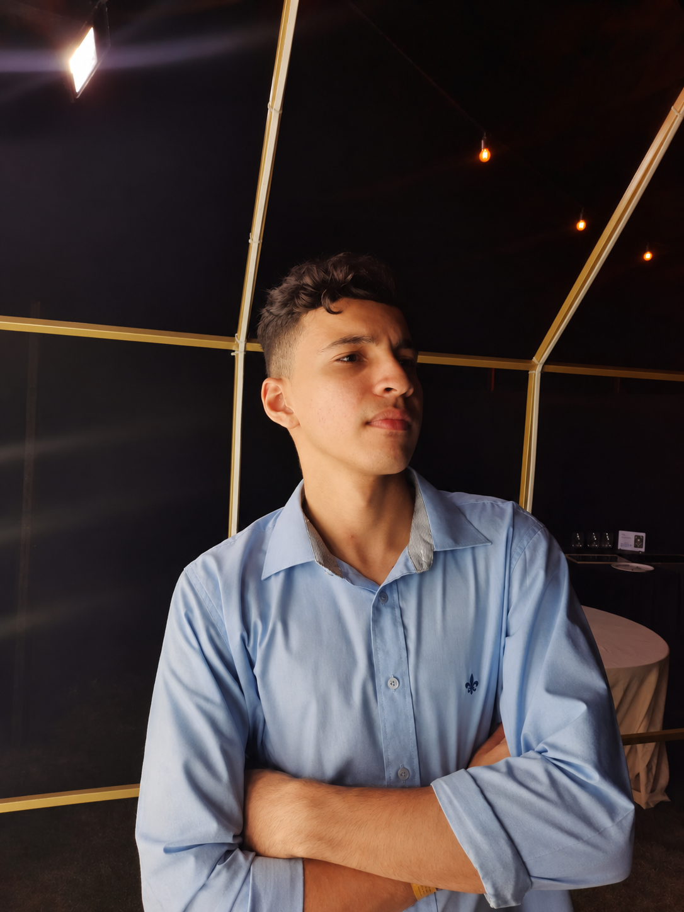

Inteligência
artificial
Assistentes e fluxos de IA para organizar informações, apoiar sua equipe e simplificar tarefas recorrentes.
↗Seu negócio tem ideias que ainda não saíram do papel.
A gente conecta tecnologia e criatividade para
colocar tudo em movimento.
Toque, teste, imagine no seu negócio.
Estas são demonstrações ilustrativas.
O seu projeto começa com a sua realidade.
Organizar informações, estruturar respostas, conectar processos. A IA pode assumir parte do repetitivo e abrir espaço para o que precisa de você.
Quero explorar IA no meu negócio ↗SIMULAÇÃO LOCAL · SEM CONEXÃO COM SISTEMAS REAISAssistentes e fluxos de IA para organizar informações, apoiar sua equipe e simplificar tarefas recorrentes.
↗Uma jornada de atendimento com contexto: primeiro contato, dúvidas frequentes e encaminhamento para sua equipe.
↗Ideias, textos e peças que falam a língua da sua marca. Uma presença com intenção, do planejamento à publicação.
↗Experiências digitais com personalidade. Sites institucionais e landing pages que apresentam sua marca e convidam à ação.
↗Escutamos sua ideia, conhecemos sua rotina e entendemos o que precisa acontecer.
Desenhamos a solução e alinhamos escopo, investimento e prazo antes de começar.
Criamos, testamos e ajustamos as entregas com você para colocar o projeto em prática.

Antes de pensar na automação, no conteúdo ou no site, quero entender o que você está construindo.
É dessa conversa que saem as conexões certas: sua ideia, a tecnologia e um caminho para colocar o projeto de pé.
Me conte o que você tem em mente ↗Não. Podemos começar com uma necessidade específica ou desenhar um projeto integrado, de acordo com o momento do seu negócio.
A proposta é apoiar o atendimento. Definimos quais etapas podem ser automatizadas e quando uma conversa deve seguir para uma pessoa.
Cada projeto tem um escopo. Depois da primeira conversa, apresentamos as entregas, o investimento e o cronograma para você avaliar.